Constant Velocity Carburetors 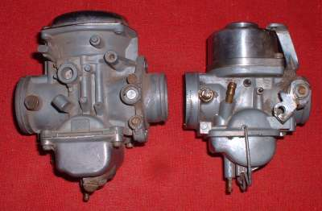
¶ If you whack the throttles wide open on a regular set of Slide Carburetors, from an idle, the engine will die. There is a reason for this. When you open the throttle side too fast the vacuum drops to, basically, nothing. With no vacuum, no gas gets sucked through the carburetor jets. With no gas to burn, the engine dies.
If the throttle is partially open, when you whack it to all the way open, the engine will not die but it will stumble a lot until the vacuum rises in the carburetor's venturi, sucking in more gas. To cure this dying and stumbling carburetor manufacturers invented the Constant Velocity, also known as Constant Depression, Carburetor.
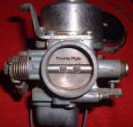 It does this by channeling vacuum pressure, from the engine side of the carburetor, through passages in the Throttle Slide to an area above the Throttle Slide, sucking it up and open. Atmospheric Air Pressure, from the Air Cleaner side of the Carburetor, is channeled to an area below the Throttle Piston or Diaphragm. The Atmospheric Air fills the void made by the Throttle Slide Piston or Diaphragm as it opens. This helps the Throttle Slide to open smoothly. When the throttle is closed the Throttle Slide drops down and shuts off the fuel going to the engine. Sometimes with a spring assist.
CV Carburetors come in two flavors. Piston slide and Diaphragm Slide.
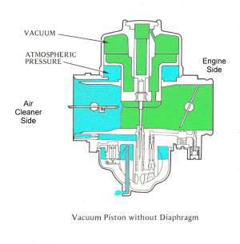 Piston Constant Velocity Carburetor Vacuum Air Flow |
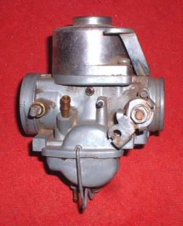 Piston Constant Velocity Carburetor |
Piston Constant Velocity Carburetors have a solid piston and slide. The piston is sealed with a Labyrinth Seal. The engine vacuum raises the slide smoothly as engine vacuum increases. When you close the throttle the slide closes from it's own weight. The throttle cut away is positioned by a peg in the carburetor body that fits into a groove in the piston throttle slide. I put a wire through the Atmospheric Air Intake Ports so you can see where the ports go.
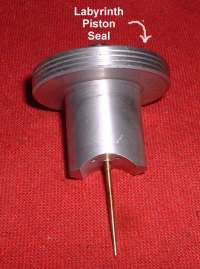 Labyrinth Piston Seal |
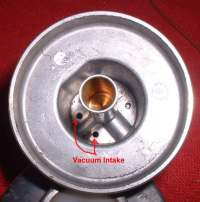 Vacuum Intake Top of Slide |
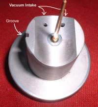 Vacuum Intake Bottom of Slide |
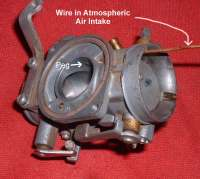 Atmospheric Air Intake |
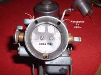 Atmospheric Air Intake |
The Diaphragm Constant Velocity Carburetor uses a Rubber Diaphragm to raise the Throttle Slide. The edge of the Diaphragm fits into a groove in the carburetor body to seal in the vacuum. When you shut down the throttle there is a light spring that closes the throttle slide. The Throttle Cut away is positioned by a rubber peg cast into the Diaphragm that fits into the Carburetor body. Again, I put a wire through the Atmospheric Air Intake Ports so you can see where the ports go.
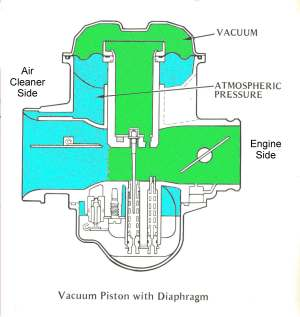 Diaphragm Constant Velocity Carburetor Vacuum Air Flow |
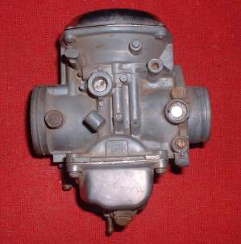
Diaphragm Constant Velocity Carburetor
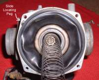 Diaphragm Top Seal Notice the Spring |
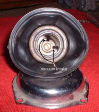 Diaphragm Vacuum Intake Top of Slide |
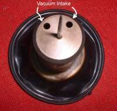 Diaphragm Vacuum Intake Bottom of Slide |
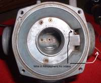 Atmospheric Air Intake |
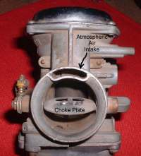 Atmospheric Air Intake |
Some Honda CV Carburetors use a Diaphragm and a Plunger to control the vacuum. A bit different but still, I think, a Diaphragm CV Carburetor.
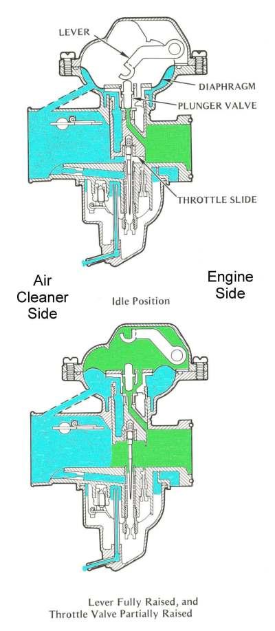
When you adjust a multi CV Carburetor set up correctly, it should smoothly Rev Up. Very smoothly, with no stumbling whatsoever, when you go from an idle to full throttle, no matter how hard you open the throttles.
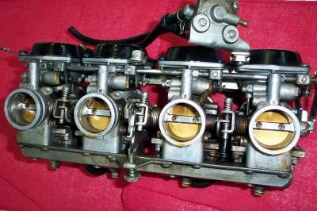

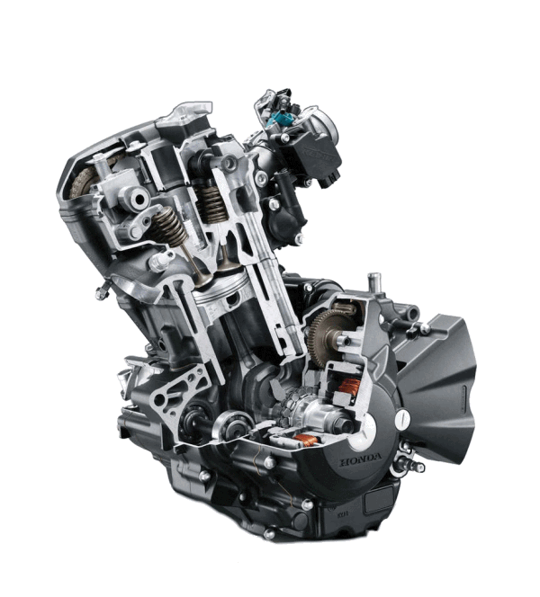 |
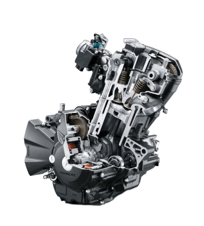 |
Copyright © 1999-2016 dansmc.com. All rights reserved.